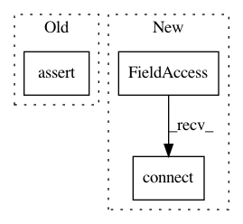

36eab8ace2d54e27db98e0051b4f43830320d010,ilastik/workflows/carving/carvingWorkflow.py,CarvingWorkflow,__init__,#CarvingWorkflow#Any#Any#Any#,25
Before Change
if hintoverlayFile is not None:
assert isinstance(hintoverlayFile, str), "hintoverlayFile should be a string, not "%s"" % type(hintoverlayFile)
if pmapoverlayFile is not None:
assert isinstance(pmapoverlayFile, str), "pmapoverlayFile should be a string, not "%s"" % type(pmapoverlayFile)
graph = Graph()
super(CarvingWorkflow, self).__init__(graph=graph, *args, **kwargs)
After Change
title = "Preprocessing",
projectFileGroupName="carving")
//self.carvingApplet.topLevelOperator.MST.connect(self.preprocessingApplet.topLevelOperator.PreprocessedData)
// Expose to shell
self._applets = []
self._applets.append(self.projectMetadataApplet)
self._applets.append(self.dataSelectionApplet)
self._applets.append(self.preprocessingApplet)
In pattern: SUPERPATTERN
Frequency: 3
Non-data size: 3
Instances
Project Name: ilastik/ilastik
Commit Name: 36eab8ace2d54e27db98e0051b4f43830320d010
Time: 2013-04-10
Author: ben-heuer@web.de
File Name: ilastik/workflows/carving/carvingWorkflow.py
Class Name: CarvingWorkflow
Method Name: __init__
Project Name: ilastik/ilastik
Commit Name: 943fa891996aed5e877801f90f7bd4edcc61e7ca
Time: 2013-04-24
Author: anna.kreshuk@iwr.uni-heidelberg.de
File Name: tests/test_applets/blockwiseObjectClassification/testOpBlockwiseObjectClassification.py
Class Name: TestOpBlockwiseObjectClassification
Method Name: testEverything
Project Name: ilastik/ilastik
Commit Name: 50ce2bcf18b82c182667ba8291d2a6c556ce16e3
Time: 2013-03-05
Author: bergs@janelia.hhmi.org
File Name: ilastik/applets/thresholdTwoLevels/opThresholdTwoLevels.py
Class Name: OpThresholdTwoLevels
Method Name: setupOutputs